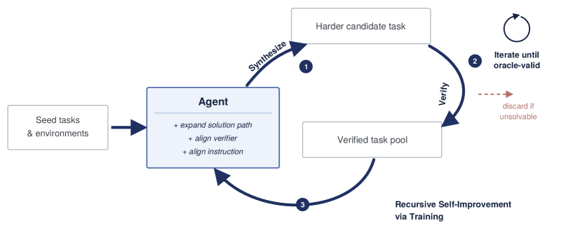
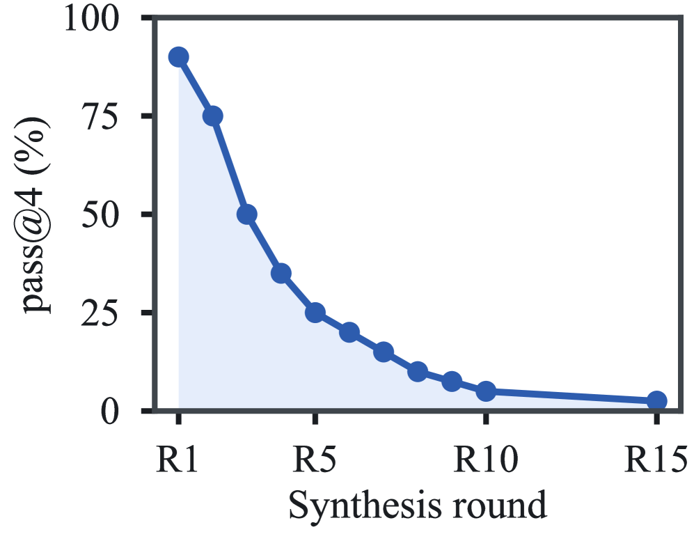

RST: Recursive Synthesis for Long-Horizon Terminal Tasks
TL;DR
- "Recursive Synthesis for Long-Horizon Terminal Tasks" (arXiv 2608.05466; Zhongzhi Li, Yucheng Shi, Zongxia Li, Ruhan Wang, and 7 further authors) inverts the usual task-authoring order for terminal agents: instead of writing a task and hoping it's solvable, RST grows a reference solution and its runtime environment first, then fits the verifier and instruction to what already runs — so every task is solvable by construction and carries its own reward signal.
- Starting from 639 verified seeds, fifteen recursive rounds produce 37,484 verified long-horizon terminal tasks at ~$0.05 each, with difficulty compounding as accepted children become the next round's seeds: DeepSeek-V4-Pro pass@4 falls from 90% at \(R_1\) to 2.5% at \(R_{15}\), while synthesis yield and domain diversity stay flat — no ceiling observed.
- The data trains real agents: SFT on rejection-sampled Qwen3.5 trajectories lifts Qwen3.5-27B on Terminal-Bench 2 from 41.2% to 47.9% (122B-A10B: 43.8% → 49.4%), and agentic PPO on the full pool takes Qwen3.5-27B to 49.44% TB2 / 32.00% TB-Hard — a +41% relative gain on the out-of-distribution hard split.
Why this matters
The scarcest resource in agentic RL right now is not compute or algorithms but verified environments: tasks where the instruction, environment, reference solution, and reward checker are mutually consistent. Human-authored terminal tasks cost hundreds to thousands of dollars each because a single inconsistency — an instruction that mentions a file the environment doesn't ship, a verifier that checks something the solution never produces — silently poisons training. Direct LLM generation of tasks breaks these dependencies constantly. This is the same bottleneck this tracker has filed under the verifier-bottleneck thesis (added today: recursive self-improvement is limited by verification, not compute): compute buys proposals, verifiers buy knowledge.
RST's answer is a self-improvement loop for the task distribution itself. Because each accepted task must pass a sandbox oracle where its own reference solution satisfies its own verifier, the factory's outputs are verified by construction; because accepted tasks reseed the next round, difficulty compounds without human curation. The result is the missing input for the RL recipes this tracker follows — a graded curriculum of long-horizon terminal tasks (successful trajectories exceed 100 steps in late rounds) that costs about as much as a coffee per thousand tasks. It is also a direct answer to the discussion in "Terminal-Bench 3.0: Harder by Measuring Weak Capabilities" about where benchmark and training-task difficulty should come from.
The core idea
Don't write the task; grow the solution. Each round takes a verified task — a tuple of instruction, environment, reference solution solve.sh, and private verifier — picks one of 40 rewrite operators, extends the solution with new executable work, aligns the environment/verifier/instruction to the extended behavior, and only accepts the child if the whole tuple still runs and passes in a fresh sandbox.
The invariant maintained by every accepted task can be written as (reconstructed formalization — the paper states this procedurally, not as an equation):
where \(T=(I_T,E_T,S_T,V_T)\) is the task's instruction, environment, reference solution, and private verifier; \(\mathrm{Exec}(S_T,E_T)\) runs the solution in a freshly built sandbox; and \(\mathrm{Consistent}\) checks that public requirements in the instruction are actually reflected in executable verifier checks. A task is a reward-emitting RL environment exactly when this predicate holds.
Recursion enters through the seed pool: accepted children of round \(R_{r-1}\) are the candidate seeds of round \(R_r\), under diversity caps on parent lineage, category, rewrite family, and generation cohort so that no single parent or rewrite pattern dominates.
How it works

Figure 2 from the paper: the synthesis loop (seed → rewrite → validate → reseed) and its two training consumers — rejection-sampled SFT trajectories and the verifier-rewarded RL pool.
Seeds. The pipeline bootstraps from 639 verified tasks sampled from TerminalWorld (validated tasks built from real interaction records). Round 1 alone yields 2,820 accepted tasks.
Target selection and contract. The generator inspects the seed's files, tools, dependencies, and workflow, then picks one of 40 rewrite operators grouped into five families (Configuration & Control State; Data, Manifest & Schema State; Filesystem & Resource Binding; Build, Cache & Artifact State; Runtime, Tooling & Diagnostics). Before touching anything it writes a rewrite plan: the new required behavior, the solution changes, what the verifier will check, what information the agent gets, and — importantly — which shortcuts the verifier must reject. Plans that make only cosmetic changes or hide required information in private tests are rejected up front.
Rewrite: grow solution, then align. The order is the whole trick. First solve.sh is extended with real executable work (deriving values, invoking tools, producing intermediate artifacts); then the environment is modified to support it (dependencies, fixtures, services, permissions); then the verifier is updated to check the new artifacts and state transitions while rejecting placeholders and hard-coded outputs; and only last is the public instruction revised to state the new objective.
Validate. Two stages: cheap static filters (near-duplicates of the seed, missing files, invalid metadata, leaked verifier details) before any sandbox is allocated; then the sandbox oracle — build the environment from scratch, execute the reference solution, run the private verifier. Repairable failures get a limited number of log-guided repairs restricted to approved files; persistent failures are discarded. Acceptance additionally requires the instruction–verifier consistency check.
pool ← 639 verified TerminalWorld seeds
for r = 1 .. 15:
seeds ← select(pool, caps: parent lineage, category,
rewrite family, generation cohort)
for each seed T = (I, E, S, V) in seeds:
op ← choose_operator(inspect(T), 40 operators / 5 families)
plan ← write_rewrite_plan(T, op); reject if cosmetic/leaky
S' ← extend_solution(S, plan) # grow behavior first
E' ← align_environment(E, S')
V' ← align_verifier(V, S', E') # reject shortcuts
I' ← revise_instruction(I, plan)
if static_filters(T') fail: continue
if sandbox_oracle(S', E', V') fails:
T' ← bounded_repair(T', logs); retry once; else discard
if consistent(I', V'): accept T'; pool ← pool ∪ {T'}
train: SFT on rejection-sampled successful rollouts;
PPO with each task's built-in verifier as reward
Results
The factory doesn't degrade. Passed-task yield per 1,000 seed attempts and candidate pass rate are stable through \(R_{15}\); normalized domain entropy moves only from 0.821 to 0.817 and the effective number of domains from 11.22 to 11.09 — no domain collapse. Median reference-solution length grows 67 → 374 lines, executed commands 40 → 244, and instruction length grows much more slowly — the tasks get harder in executable work, not in prompt verbosity.

Figure 12 from the paper: frontier-model pass@4 on task subsets by round — a 90% → 2.5% decline with no observed ceiling; mean verifier partial credit falls 0.970 → 0.170.
SFT. Fine-tuning on successful Qwen3.5 rollouts improves monotonically as trajectories from more synthesis rounds are added. After three rounds: Qwen3.5-27B goes 41.2 → 47.9 on TB2, 22.7 → 28.3 on TB-Hard, 18.1 → 22.4 on Long-Horizon Terminal Bench; Qwen3.5-122B-A10B goes 43.8 → 49.4, 20.0 → 30.0, 18.9 → 23.6.
RL. PPO (actor–critic, GAE, no KL penalty, \(\epsilon=0.2\)) over the full 37,484-task pool, reward from each task's built-in verifier: mean verifier reward climbs from ~0.11 to above 0.14 while mean trajectory length rises from ~19–20 turns to 30+ — longer interactions track greater task progress, not degradation. Final: Qwen3.5-27B-RL reaches 49.44 / 32.00 / 22.07 on TB2 / TB-Hard / LHTB, relative gains of +20.0%, +41.2%, +21.9% over base, with the largest gain on the independently constructed hard split. DeepSeek-V4-Pro (51.68 / 36.00 / 30.00) stays ahead — headroom remains.
How it connects
- Verifier bottleneck & RSI: RST is the constructive counterpart to the verifier-bottleneck argument (tracked today) and the empirical-RSI caution from the Narayanan group — it shows one domain where verification can be manufactured at scale, because terminal work is checkable by execution.
- Benchmarks: the tasks target Terminal-Bench 2 / TB-Hard / LHTB (see "Terminal-Bench 3.0" in this tracker), and the difficulty-by-construction philosophy echoes "Evolving Benchmarks".
- Agentic RL: the PPO consumer sits alongside TRACE (turn-level rewards) and today's AgentOPSD tutorial — RST supplies the environments those credit-assignment methods need; skill-self-play and AREX cover the analogous self-generated-curriculum idea for skills and research tasks.
Critical take
The acceptance predicate guarantees solvability, not well-posedness: a verifier aligned to one reference workflow may under-credit legitimate alternative solutions, and the paper's own instruction-audit and requirement-to-verifier-alignment figures (10–11) are measurements, not guarantees. Difficulty growth is partly length growth — pass@4 falling to 2.5% shows tasks got harder, but not that they got harder in interestingly diverse ways; all rewrite operators extend existing workflows, so the pool may drift toward long compositional chains over genuinely novel capabilities. Retaining rewrite variants without deduplication in the RL pool risks reward-correlated near-duplicates. And the strongest trained model still trails DeepSeek-V4-Pro on every benchmark, so the demonstrated value is "cheap data that reliably moves mid-scale models," not frontier-level supremacy. None of this dents the main contribution: a $0.05 marginal cost for verified long-horizon environments changes what's economically feasible in agentic post-training.
If you remember three things
- Build the solution first, then fit the task to it — solvability and reward signal come for free, and the sandbox oracle (reference solution must pass its own verifier in a fresh environment) is the whole quality gate.
- Recursion is the difficulty engine: accepted children reseed the factory, compounding executable complexity (67 → 374 median solution lines) while diversity caps keep the pool from collapsing — 37,484 tasks at ~$0.05 each, frontier pass@4 driven from 90% to 2.5%.
- The data actually trains agents: +6–10 points SFT on Terminal-Bench 2 and +41% relative via PPO on the out-of-distribution hard split — synthetic task factories are now a viable substitute for hand-built RL environments in the terminal domain.